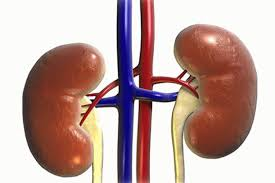

उत्सर्जी तन्त्र

इस लेख में मानव शरीर से संबंधित उल्लेख है। कशेरुकी जन्तुओं में उत्सर्जी तन्त्र एवं जनन तन्त्रों में विशेष रूप से नर में, परस्पर बहुत सम्बन्ध होता है। इसलिए इन दोनों तन्त्रों को सम्मिलित रूप से मूत्रोजनन तन्त्र कहते हैं। मनुष्य में इन दोनों तन्त्रों के प्रमुख अंगों में तो कोई सम्बन्ध नहीं होता है, किन्तु इनकी वाहिनियों में महत्त्वपूर्ण सम्बन्ध होता है। मनुष्य के प्रमुख उत्सर्जी अंग एक जोड़ी वृक्क या गुर्दे होते हैं। इनसे सम्बन्धित अन्य उत्सर्जी अंग मूत्रवाहिनियाँ, मूत्राशय तथा मूत्र मार्ग हैं। ये सभी उत्सर्जी अंग मिलकर उत्सर्जी तन्त्र का निर्माण करते हैं। इस प्रकार उत्सर्जनी तंत्र शरीर की उस आंतरिक व्यवस्था (सिस्टम ऑफ अरेंजमेंट) को कहेंगे, जिसके द्वारा शरीर की कोशिकाओं के उपापचय (मेटॉबोलिज्म) से उत्पन्न मल या वर्ज्य पदार्थ (वेस्टेज) शरीर से बाहर निकलते रहते हैं। यहाँ पर ध्यान देने की बात है कि शरीर के भीतर कुछ और भी तंत्र होते हैं, जो इसी से मिलते जुलते कार्य करते हैं। इनके नाम हैं :-
- स्रवण (secretion) तथा,
- मलोत्सर्जन (defecation)।
स्रवण
शरीर में कुछ ऐसी ग्रंथियाँ होती हैं, जिनसे कुछ रासायनिक तत्व स्रवित होते रहते हैं। उदाहरणार्थ, नलिकाविहीन ग्रंथियों (endocrine glands) से हार्मोनों का स्रवण या जीभ की लारग्रंथियों (salivary glands) से लार या थूक (सेलिवा) का स्रवण इसी कोटि के हैं। सच पूछिए तो स्रवित पदार्थ या स्राव कोशिकाओं या ग्रंथियों के मल नहीं होते। मल या वर्ज्य पदार्थ हम उसे कहते हैं, जिसकी शरीर में कोई उपयोगिता नहीं होती। वस्तुत: वर्ज्य पदार्थो का शरीर से बाहर निकलना अपरिहार्य है, अन्यथा उनके विषाक्त प्रभाव से शरीर में रोग, अथवा कुछ स्थितियों में, प्राणी की मृत्यु तक हो सकती है। इसके विपरीत, स्रवित पदार्थो की शरीर में आवश्यकता होती है और उनसे शरीर की कतिपय आवश्यकताओं की पूर्ति होती रहती है। जैसे, लार खाने को पचाता है और हार्मोन शरीर की आंतरिक क्रियाएँ तथा तज्जन्य शारीरिक स्वास्थ्य बनाए रहते हैं।
मलोत्सर्जन
मलोत्सर्जन शरीर के भीतर अनपचे भोजन और अन्य पदार्थो का विष्ठा (फिसीस) के रूप में मलनाली द्वारा गुदा (anus) से बाहर निकलने की क्रिया को कहा जाता है। अनपचा भोजन शरीर की किसी भी कोशिका अथवा ऊतक (टिशू) के काम नहीं आता अत: शरीर में इसका अधिक समय तक रुके रहना हानिकारक होता है।
वृक्क वृक्क
(Kidney)मनुष्य का एक उत्सर्जी तन्त्र है। इन्हें गुर्दे भी कहा जाता है। मनुष्य में एक जोड़ी वृक्क होते हैं, जो उदर गुहा के पृष्ठभाग में डायाफ्राम में नीचे व कशेरुक दण्डके इधर–उधर (दाएँ–बाएँ) स्थित होते हैं। दाहिनी ओर यकृत की उपस्थिति के कारण दाहिना वृक्क बाएँ वृक्क से कुछ आगे स्थित होता है। दोनों वृक्क एक पतली पेरिटोनियम झिल्ली द्वारा उदरगुहा की पृष्ठ दीवार से लगे हुए होते हैं और वसीय ऊतक के अन्दर भी धँसे होते हैं।
सरंचना
वृक्कों की आकृति सेम के दानों की भाँति तथा आकार लगभग 4¢¢-6¢¢ होता है। मुनष्य तथा अधिकांश कशेरुकीय जंतुओं में एक जोड़ा वृक्क पाए जाते हैं। ये उदरगह्वर में पीठ की ओर, आमाशय के नीचे एक दाएँ तथा एक बाएँ भाग में स्थित होते हैं। प्रत्येक वृक्क में लगभग 10 लाख सूक्ष्म वृक्कक (nephrons) पाए जाते हैं। प्रत्येक वृक्क में दो भाग होते हैं : प्रथम भाग को उत्सर्जनी नाल कहते हैं। यह लंबा और पतला होता है। दूसरा भाग केशिका गुच्छ कहलाता है क्योंकि यह केशिकाओं (capillaries) के गोले जैसा होता है। उत्सर्जनी नाल एक छोर पर बंद रहता है और बोमन संपुट (Bowman's capsule) के रूप में फैला होता है। कोशिका गुच्द की कोशिकाएँ बोमन संपुट द्वारा ढँकी रहती हैं। बोमन संपुट ने निकलने वाला नाल बहुत लंबा तथा ऐंठा हुआ होता है और इसकी दीवाल की मोटाई लगभग एक कोशिका (cell) की मोटाई जितनी होती है। उत्सर्जनी नालें आपस में गुँथकर संग्राही नालों में जुड़ी रहती है। ये नालें क्रमश: बड़ी नालों में जुटती जाती है और अंत में एक केंद्रीय वृक्कगुहा (central cavity of the kidney) में समा जाती हैं। इस गुहा को वृक्कवस्ति (kidney pelvis) कहा जाता है। वस्तिगुहा मूत्रवाहिनी नलिका (ureter) से और मूत्रवाहिनी नलिका मूत्राशय (urinary bladder) से जुड़ी रहती हैं। वृक्कों से चलने वाला मूत्र इन्हीं नलिकाओं से गुजरकर मूत्राशय में जमा होता रहता है।
कार्य
वृक्कों का मुख्य कार्य मूत्रविसर्जन करना है। 'मूत्र' (urine) क्या है, पहले हमें यह जान लेना चाहिए:- मूत्र (urine) के निर्माण की प्रक्रिया जटिल होती है। इस प्रक्रिया के अंतर्गत तीन प्रकार के कार्य होते हैं : निस्यंदन, पुनर्शोषण तथा संवर्धन।
उत्सर्जन
उत्सर्जन (excretion) स्रवण तथा मलविसर्जन के विपरीत उत्सर्जन शरीर के भीतर से कोशिकाओं के उपापचय द्वारा उत्पन्न वर्ज्य पदार्थो के निस्सरण की वह प्रक्रिया है, जिससे जीवों के शरीर के आंतरिक परिवेश का भौतिक रासायनिक (फिजिको केमिकल) संतुलन बना रहता है। यह वह मल होता है, जिसकी शरीर में खपत नहीं हो पाती, जैसे पसीना, मूत्र, आँख का कीचड़, श्वास आदि।
उत्सर्जक अंग
उत्सर्जक अंग (excretory organs) सृष्टि के समस्त सजीव प्राणियों को मूलभूत इकाई कोशिका होती है। इसी का समुच्चय ऊतक तथा ऊतकों से निर्मित अंगों का पुतला जीव होता है। कोशिकाएँ अपने आप में संपूर्ण होती हैं अत: उनसे निर्मित शरीर में वे सभी क्रियाएँ होती हैं, जो उनकी इकाई में होती है। एककोशिकीय जन्तु प्रोटोज़ोआ से लेकर बहुकोशिकीय मनुष्य में उत्सर्जन क्रिया अवश्य पाई जाती है। यह दूसरी बात है कि प्रोटोज़ोआ से लेकर आर्थोपोडा तथा लोअर काडेट से लेकर मैमल तक के अकशेरुकीय एवं कशेरुकीय जंतुओं की उत्सर्जन प्रक्रिया और उत्सर्जक अंगों में पर्याप्त भिन्नता होती है।
अकशेरुकी उत्सर्जक अंग
अकशेरुकी उत्सर्जक अंग (invertebrate excretory organs) अमीबा, पेरेमीशियम आदि एककोशिकीय (unicellular) जीवों के शरीर के भीतर कुंवनशील रिक्तिकाएँ (contractile vacuoles) पाई जाती हैं। इनके भीतर आसपास के जीवद्रव्य (protoplasm) से चूषित जल इकट्ठा होता रहता है। यह जल जब मात्रा से अधिक हो जाता है तो समय समय पर अपने आप ही बाहर निकल जाया करता है। यह अतिरिक्त जल यदि कोशिका से बाहर न निकले तो कोशिका फूलते फूलते फट जा सकती है। कोशिका फटने से जीव की मृत्यु हो जाएगी। प्राटोज़ोआ के उत्सर्जित जल में मुख्य पदार्थ अमोनिया होता है।
किंचित जटिल, और बहुकोशिकीय (mulitcellular) जंतुओं का आदिम रूप (primitive form) हाइड्रा माना जाता है। इन जंतुओं के उत्सर्जक अंग कुछ भिन्न ढंग से कार्य करते हैं। इनके शरीर की बाह्म त्वचा में अनेक छिद्र होते हैं, जिनसे होकर वर्ज्य पदार्थ बाहर निकलते रहते हैं।
उत्सर्जक अंगों की जटिलता का दर्शन हमें चिपिट क्रिमियों (ftatworms) में होता है। इनके शरीर में नलिकाओं या ग्रंथियुक्त सरणियों (glandular canals) की एक व्यवस्था (सिस्टम) पाई जाती है। ये सरणियाँ शरीर भर में शाखा प्रशाखाओं के रूप में फैली और बाह्म त्वचा से जुड़ी रहती हैं। इन्हीं सरणियों से होकर मल शरीर के बाहर निकलता रहता है। इन नलिकाओं के मुख पर, भीतर की ओर, रोमकों (cilia) की एक कलँगी (uft) पाई जाती है, जिनके लहराने से एक प्रकार का प्रवाह या लहर सी उठती है, इसी प्रवाह के कारण मल शरीर से बाहर निकल जाता है। रोमकीय सरणि के मुख के पास कुछ कोशिकाएँ पाई जाती है, जिन्हें ज्वाला कोशिका (flame cells) कहते हैं। इनका यह नाम करण इस कारण हुआ है कि रोमकों की लहर मोमबत्ती के प्रकाश की भाँति उठती बैठती रहती है। चिपिट क्रिमियों के शरीर से निकलनेवाले वर्ज्य पदार्थो में कार्बन डाइ-आक्साइड और अमोनिया प्रमुख हैं। उत्सर्जन की इस प्रक्रिया को आदिवृक्कक तंत्र (protonephridal system) कहा गया है।
केंचुओं जैसे बहुखंडी (me americ) शरीरवाले जंतुओं के शरीर में विशेषाकृत अंगों का एक एक जोड़ा शरीर के प्रत्येक खंड में पाया जाता है। इन अंगों को वृक्कक (nephridia) कहते है। वृक्कक की संरचना लंबी वलित (coiled) नलिकाओं द्वारा हुई होती है। इसका एक छोर शरीर और दूसरा त्वचा में जुड़ा रहता है। प्रत्येक नलिका कोशिकाओं (capillaries) के कुंडल में बँधी होती है, जिसके कारण जंतु के रक्त से निकला वर्ज्य पदार्थ बाहर निकलता है। वृक्कक के भीतरी छोर की आकृति कीप जैसी होती है और इसमें रोमक पाए जाते हैं, जिनके कारण एक लहर सी उठकर वर्ज्य पदार्थो को भीतर खींच लेती है। इसी प्रकार के वृक्कक सीपों, घोंघों, शंखों आदि (molluscs) तथा रॉटीफेरीय जंतुओं में पाए जाते हैं। निम्न कशेरुकीय (lower chordate) वर्ग के जंतु ऐफ़ि-आक्सम में भी वृक्ककों की व्यवस्था पाई जाती है।
कीटों (insects) के शरीर में मैल्पिगी नलिकाएँ (malpighiantubules) पाई जाती हैं, जो शरीरगुहा (body cavity) में स्थित होती हैं। ये नालिकाएँ पाचक क्षेत्र या मार्ग से जुड़ी रहती हैं। शरीर के रसों से मल ग्रहण करके पश्चांत्र (hind gut) में उस जंक्शन स्थान पर जमा होता रहता है, जहाँ पर आँतें आमाशय से मिली होती हैं। यह जमा हुआ मल आमाशय से होता हुआ गुदामार्ग से बाहर निकल जाता है1
कशेरुकीय उत्सर्जक अंग
कशेरुकीय उत्सर्जक अंग (vertebrate excreory organs)कशेरुकीय जंतुओं में कई अंग मलोत्सर्जन का कार्य करते हैं। जैसे, मनुष्यों में गुर्दा या वृक्क (किडनी) मुख्य उत्सर्जक अंग हैं, जिनसे मूत्रविसर्जन होता है और इनके अतिरिक्त त्वचा से पसीना, यकृत से पित्त, फेंफडों से कार्बन डाइ-आक्साइड आदि का निकलना भी उत्सर्जन क्रिया के ही अंतर्गत आते हैं। इस प्रसंग में मूत्रीय सर्जक अंग, वृक्क, की सामान्य संरचना का ज्ञान अपेक्षित होगा।
निस्यंदन
निस्यंदन (filtation) उस स्थान पर होता है जहाँ केशिकागुच्छ (glomerulus) तथा बोमन संपुट (Bowman's capsule) रक्त का निस्यंदन होता रहता है। इस प्रक्रिया में प्लाज्म़ाप्रोटीनों और रक्त कोशिकाओं के साथ साथ रक्त में मिले जल, लवण, शर्करा, यूरिया आदि सभी पदार्थ निस्यंदित होकर बोमन संपुट में एकत्र हो जाते हैं। यह निस्यंदन किंचित् गाढ़ा होता है, इसमें एकत्रित तरल को संपुटी निस्यंद (capsular filrate) कहते हैं। केशिकागुच्छों से होकर गुजरनेवाले रक्त का लगभग 20 प्रतिशत संपुटी निस्यंद में तथा शेष 80 प्रतिशत रुधिरवाहिकाओं (blood vessels) से होता हुआ बाहर चला जाता है।
निस्यंद वल्कुट (cortex) में स्थित बोमन संपुटों से होता हुआ एक लंबे पाश में प्रवेश करता है। यह पाश वल्कुट से निकलकर मध्यका (medulla) में जाता तथा पुन: वल्कुट में लौट आता है। निस्यंदपाश से लौटकर एक दूरस्थ कुंडलित नलिका (distal convoluted tube) में चला जाता है। वहाँ से वापस लौटकर यह संग्राहक नलिका से होता हुआ वस्तिप्रदेश (pelvis) में चला जाता है। मूत्र जब वृक्क के वस्तिप्रदेश (pelvis) ने निकलकर मूत्रवाहिनी, मूत्राशय और मूत्रमार्ग से होकर गुजरता रहता है तो उसमें कोई परवर्ती परिवर्तन नहीं होता। इसकी सांद्रता में वास्तविक परिवर्तन तब होता है जब बोमन संपुटों से निकलकर लंबी कुंडलित नालों से गुजरनेवाले मूत्रपदार्थ संग्राहक नलिका में जमा होते हैं।
पुनर्शोषण
पुनर्शोषण (Reabsorption) वृक्कनालों की दीवालें चिपटी अथवा घनाकार एपीथीलियमी कोशिकाओं (epithelial cells) को एकहरी पर्त द्वारा बनी होती हैं। इन दीवालों से होकर जब निस्यंद गुजरता है तो ये उनमें मिले जल की बहुत बड़ी मात्रा के साथ लगभग संपूर्ण ग्लूकोस एमिनो अम्लों तथा शरीर के लिए अनिवार्य दूसरे पदार्थो को या तो वापस लौआ देती है या उन्हें चूसकर पुन: रक्तप्रवाह में सक्रिय कर देती है। इसका मुख्य कारण यह है कि केशिकागुच्छ से निकलनेवाली रक्तवाहिनियाँ किसी शिरा से सीधे-सीधे नहीं जुड़ी रहतीं। ये रक्तवाहिनियाँ निकटस्थ तथा दूरस्थ कुंडलित नालों की ढँकनेवाले एक दूसरे केशिकाजाल से जुड़ी होती हैं। इस प्रकार हम देखते हैं कि वृक्क में रक्त का मार्ग अन्य अंगों के मार्ग से भिन्न होता है।
रक्त में पुनर्शोषण का कार्य प्रकृति बहुत सावधानीपूर्वक करती है। किसी पदार्थ का पुनर्शोषण आवश्यक है या अनावश्यक, प्रकृति इसका स्वयं निर्णय करती है। जैसे, मधुमेह के रोगी के रक्त में शर्करा की अधिकता होती हैं; ऐसे व्यक्ति में शर्करा का पुनर्शोषण नहीं होगा और संपूर्ण शर्करा मूत्र में मिलकर शरीर के बाहर निकल जाएगी। अनुमान है कि मनुष्य के वृक्क एक लिटर मूत्र उत्पन्न करने के लिए 120 लिटर निस्यंद तैयार करते हैं। शेष 119 लिटर जल का पुनर्शोषण हो जाता है। किंतु यह मात्रा शरीर की तात्कालिक आवश्यकता पर निर्भर करती है और इसमें न्यूनाधिकता भी हो सकती है।
संवर्धन
संवर्धन (Augmentation) वृक्कनाल की कोशिकाएँ निस्यंद से केवल पदार्थो का वर्जन तथा उन्हें पुन: रक्त में प्रेषित ही नहीं करतीं, अपितु रक्तप्रवाह से अतिरिक्त वर्ज्य पदार्थो (waste materials) को लेकर उन्हें निस्यंद में उत्सर्जित भी करती हैं। इससे निस्यंद में वृद्धि हो जाती है। इसी प्रक्रिया को संवर्धन कहा जाता है। यह निम्न कशेरुकीय जंतुओं में, जिनके वृक्कों में केशिकागुच्छों (glomeruli) तथा बोमन संपुटों का अभाव पाया जाता है, अधिकतर देखा जाता है।
मूत्र में पाए जानेवाले पदार्थ-सामान्य मनुष्य एक दिन रात में कुल मिलाकर लगभग डेढ़ किलोग्राम (1500 मि.ली.) मूत्र विसर्जित करता है। इस मात्रा में लगभग 96 प्रतिशत जल, .15 प्रतिशत लवण तथा 2.5 प्रतिशत कार्बनिक वर्ज्य पदार्थ, जैसे यूरिया पाए जाते हैं। लवणों के अंतर्गत सोडियम क्लोराइड, पोटैशियम, कैल्शियम, मैग्नीशियम, एमोनियम सल्फेट, एमोनियम फास्फेट तथा एमोनियम कार्बोनेट आते हैं।
मूत्र में पाए जानेवाले ठोस पदार्थो में क्रिएटिनिन और यूरिया मुख्य है। मूत्र का पीलापन यूरोक्रीम नामक एक वर्णक या रंजक (pigment) के कारण होता है। वैज्ञानिकों का मत है वृक्क जिन पदार्थो का उत्सर्जन करते है, उनका उत्पादन वे स्वयं नहीं करते, अपितु रक्त से ग्रहण करते हैं। किंतु आधुनिक शोधों से पता चलता है कि वास्वविक उत्सर्जन क्रिया वलित नालें (convoluted tubules) करती हैं। ये नालें रक्त से प्राप्त पदार्थो का इस प्रकार रूपांतर कर देती हैं। कि एक सर्वथा भिन्न पदार्थ बन जाता है। ह्वाइट, हैंडलर स्मिथ तथा स्टेटेन प्रिंसिपुल्स आव बायोकेमिस्ट्री, मेक्ग्रा हिल, 1959 ने सामान्य वयस्क मनुष्य के 24 घंटे के मूत्र में पाए जानेवालें पदार्थो की मात्रा की एक तालिका दी है, जिसे नीचे उद्धृत किया जा रहा है।